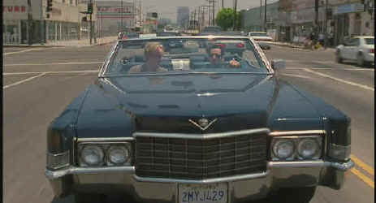

Artisan/1998/88m/ANA 1.85
 |
Stahl cruises LA on drugs and ego.©Artisan |
The movie is given a
consistent visual look and a vital editing style that develops a rhythm measured perfectly
to the flow on the story David Veloz makes a powerful directing debut with this film.
Veloz also shares credit for the screenplay with Jerry Stahl, on whose experiences Permanent
Midnight is based. Wisely, the film is structured beginning with Jerry's final moments
working the burgers as part of a rehab program. Hope remains afloat on the river of
Jerry's misery. Yet, in these first scenes, there is a sense that Jerry will fall back
into a world of drug despair.
Jerry recounts his arrival in Hollywood, a young man with all the
cynical confidence of a guy moving three hundred miles an hour through a traffic jam. An
introduction to a beautiful television production executive looking for green card help
gets Jerry a step up in the industry. The marriage of convenience turns into an intimate
relationship marred by Jerry's drug abuse. In fact, you have to wonder why this
relationship blossoms at all. The ins and outs of Jerry's writing and personal interaction
is related in penetrating detail as the writer looks back on his bleak Hollywood
existence.
The supporting players are all uniformly good but they truly
serve to support the death defying drug acrobatics of Ben Stiller. Elizabeth Hurley is
poshly cool as Stahl's "green card" wife Sandra, Maria Bello is a delightful and
pretty new face as Stahl's new love Kitty and Owen Wilson continues his winning streak by
creating another quirky character as Jerry's buddy Nicky.
Permanent Midnight is photographed with a bright and clear
vision by Robert D. Yeoman. Nothing is hidden behind the artifice of the lens. The layered
editing punctuated by elegant dissolves or jump cuts by Cara Silverman and Steven Weisberg
enhanced the grammar of the film brilliantly.
Permanent Midnight is a breathlessly stunning DVD
transfer. The anamorphic images are consistently sharp. Background detail is finely
delineated. There are no unsightly artifacts resulting from an overzealous desire for more
detail than NTSC video can handle. A few glimpses of slight edge enhancement are barely
visible, but they do not detract from the pristine perfection of this DVD. The soundtrack
is perfectly tuned tot he material. Hollywood party atmosphere invades the home theater
space smartly. The beat of the music that surrounds the characters in a car or at a party
never overpowers the dialogue. Now add in the bonus of a director's commentary and deleted
scenes and you have a DVD package of the first order.